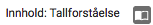
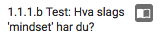
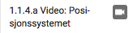
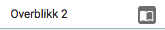
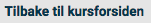
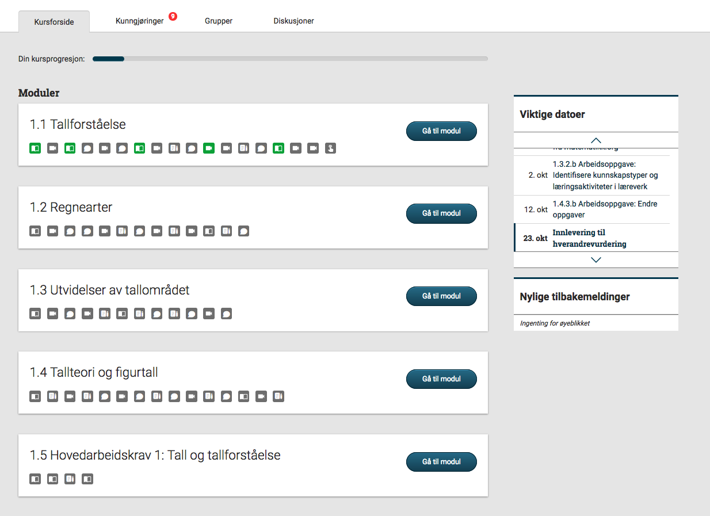
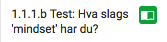
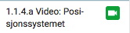
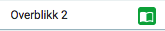

print "===" print "TC6" print "Mark several items as done on module page." print "Prerequisite: TC5" firefox = App.open("Firefox") r = Region(386,261,324,967) r2 = Region(653,264,921,242) def tc6part1(): r.click() wait(2) r2.click() wait(2) r.click() wait(2) r2.click() wait(2) r.click() wait(2) r2.click() wait(2) r.click() wait(2) r2.click() wait(2) r.click() wait(2) r2.click() wait(2) #Go to course home page to check if progress is updated. Region(430,194,247,212).click() wait(3) assert exists() #Go back to module page to reset to initial state. def tc6part2(): r3 = Region(429,468,101,183) r3.click(Pattern().exact()) wait(3) r2.click() wait(2) r.click() wait(2) r2.click() wait(2) r.click() wait(2) r2.click() wait(2) r.click() wait(2) r2.click() wait(2) r.click() wait(2) r2.click() wait(2) tc6part1() tc6part2() print "PASSED"